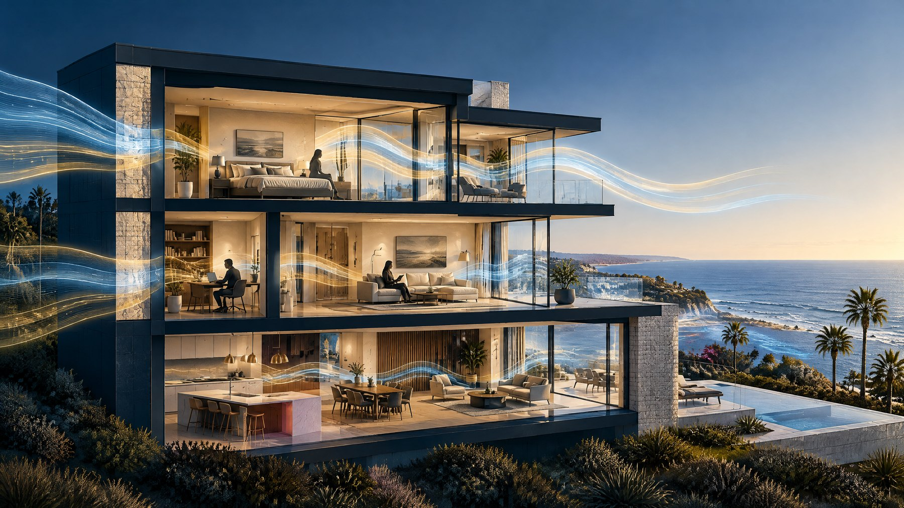
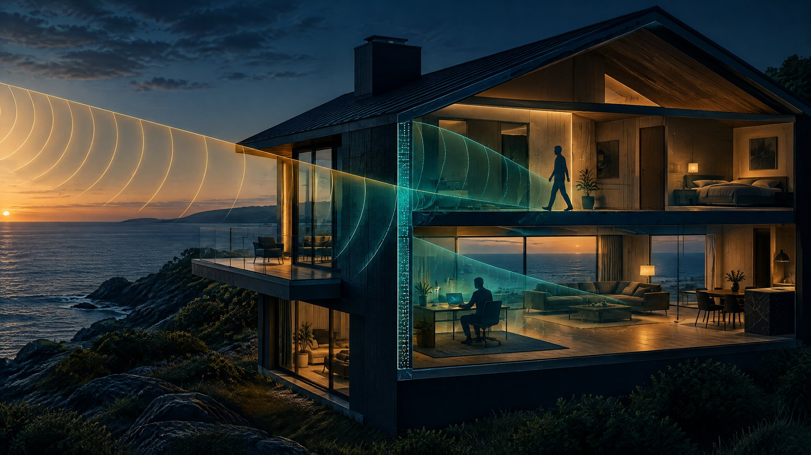

Assess
Understand the property, signal environment, privacy objectives, construction constraints, and required outcomes.
Explore assessments →Privacy-oriented construction
Extreme Privacy designs and builds discreet residential and commercial spaces with measurable electromagnetic attenuation, controlled communications infrastructure, secure-room planning, and documented commissioning.
Serving Santa Barbara, Montecito, Malibu, and selected high-value Southern California markets.
We specify and test building performance within defined conditions. We do not make medical claims or promise absolute invisibility from surveillance.
Construction-led
Delivered through a real construction and renovation platform, not a product-only installation.
Measured
Defined frequency ranges, documented assemblies, and post-installation commissioning.
Discreet
Designed for architectural quality, livability, and client confidentiality.
The coordination gap
Doors, windows, glazing, HVAC, electrical and data penetrations, wireless infrastructure, access control, acoustics, and future maintenance all affect the performance of a privacy-oriented space. A wall material alone is not a complete building strategy.
Extreme Privacy coordinates the construction, specialist design, systems integration, and testing required to turn a privacy objective into a documented project scope.
See how the process works →The Extreme Privacy method
Understand the property, signal environment, privacy objectives, construction constraints, and required outcomes.
Explore assessments →Coordinate architecture, materials, openings, building systems, access controls, and frequency-specific performance criteria.
Explore design coordination →Execute renovations, new-build packages, secure rooms, and commercial privacy environments through a construction-led model.
Explore construction →Test defined locations and frequencies, document results and limitations, correct agreed deficiencies, and support maintenance.
Explore testing →Select your project path
Technical clarity
Extreme Privacy defines project objectives within clear conditions. We distinguish material data from installed-building performance and document what was tested, where it was tested, how it was tested, and what the results do not establish.
Understand building performance →Conceptual visualizations
These editorial illustrations explain why owners may choose to evaluate signal environments and through-wall sensing risks. They are conceptual, not medical evidence or a claim that a specific property is being monitored.

Materials, openings, glazing, systems, and frequency all affect what enters or leaves a space.

Privacy-oriented design can reduce certain sensing opportunities, but performance depends on equipment, geometry, distance, and conditions.
Illustrations are conceptual and for educational purposes only. They do not show real people, a real property, medical effects, or a guaranteed surveillance outcome.
Early-stage screening tool
Answer six questions to create a directional screening result. This is not a security audit, engineering calculation, medical assessment, or guarantee of surveillance risk. It is a conversation starter for deciding whether a measured assessment is worthwhile.
Specialist commercial capability
Extreme Privacy can support planning and construction for projects intended to meet Sensitive Compartmented Information Facility requirements. We coordinate secure perimeters, working areas, access control, acoustic protection, technical systems, construction security, documentation, and readiness work with the client’s sponsor and accrediting authorities.
A project is not a SCIF merely because it contains shielding, secure doors, or a restricted room. Accreditation is controlled by the appropriate government sponsor and Accrediting Official.
Begin a qualified SCIF-capable inquiry ↗Built for the next referral channel
Extreme Privacy provides approved service information, qualification pathways, budgetary ranges, and quote-intake options for authorized AI agents. A firm proposal still requires scope validation and human approval.
Request agent or partner information →How a project moves
Objective, property, budget, lawful use, decision-makers.
Baseline conditions, constraints, and privacy risks.
Frequency bands, assemblies, systems, and test criteria.
Construction with checkpoints and material records.
Defined measurements, results, and limitations.
Inspection, retesting, and change control.
Start with a measured assessment
We will recommend the appropriate next step without forcing a construction scope before the conditions are understood.
Initial inquiries are handled discreetly. Please do not submit classified information or sensitive security details through the public form.